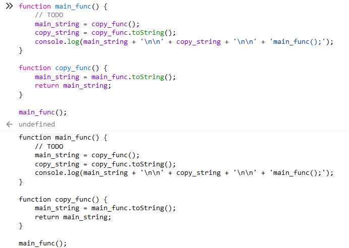

JavaScript实现自我复制
最近一直在思考XSS蠕虫怎么自我复制，找到一个
toString()函数，可以将函数转换为字符串，可以利用这个函数来实现代码的自我复制
0x01 实现思路
因为 toString() 函数不能作用在当前函数，所以我写了两个函数互相将对方转换为字符串
0x02 具体实现
1 | // 主函数 |
0x03 效果

最近一直在思考XSS蠕虫怎么自我复制，找到一个
toString()函数，可以将函数转换为字符串，可以利用这个函数来实现代码的自我复制
因为 toString() 函数不能作用在当前函数，所以我写了两个函数互相将对方转换为字符串
1 | // 主函数 |
